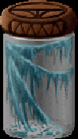

|  |
One of the world's more ingenious carniverous plants, web moss captures small insects much as a spider web does, and then folds over on itself to devour it's prey. Harvesting this substance is a dangerous and tedious process, but once the moss has dried, it can be invaluable for the casting of some spells.
|
||||